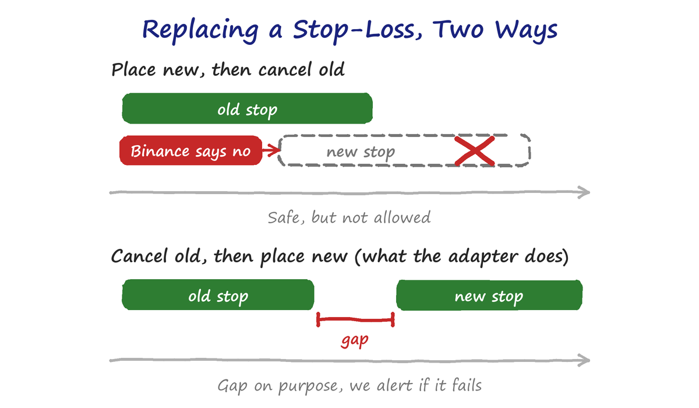
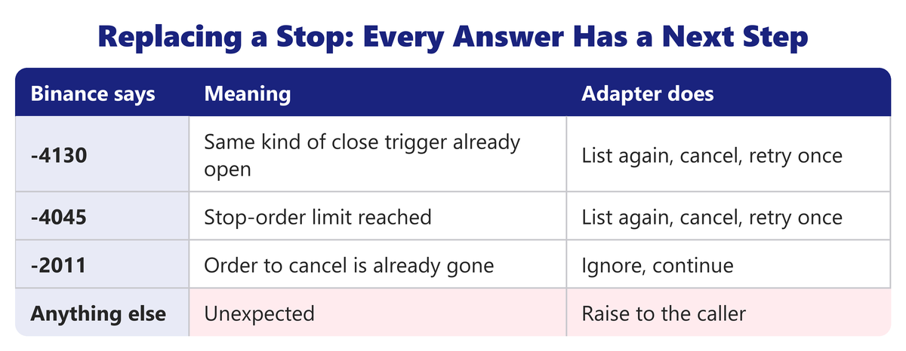
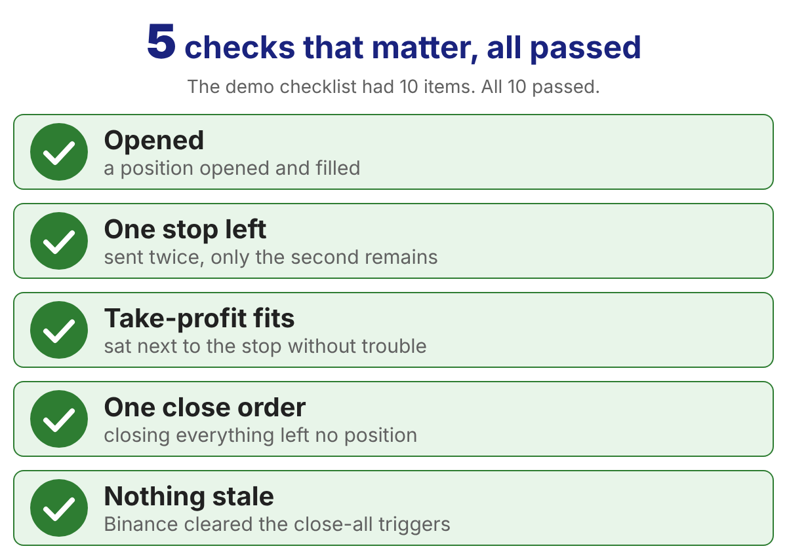
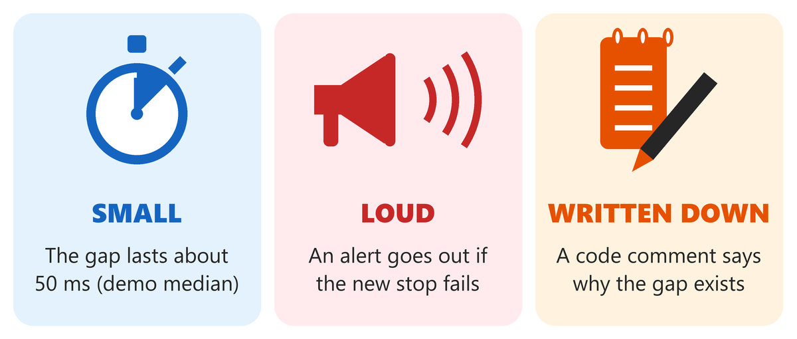

In our demo tests, Binance rejected the safe way to swap a protective order. Our adapter cancels first and leaves a gap on purpose, and this is how long the gap stays open.
A worker wearing a two-legged lanyard moves along a structure one leg at a time. OSHA's technical manual describes it as being able to move across the work face, remaining connected by at least one leg of the lanyard at all times.
We wanted exactly that for the stop-losses that guard our open futures positions (a stop-loss is an order that closes a position if the price moves against it): clip the new stop on before unclipping the old one, so the position is never bare. Binance had other ideas. In our tests on its demo environment it rejected the second stop, so our adapter now does the opposite and cancels first, leaving a gap on purpose.

Why a Stop Gets Replaced at All
Our Binance Adapter is the service that turns our trading engine's order requests into Binance API calls. This post is about the previous engine, which was stubborn about protection: every rebalancing cycle, when it recomputed its target portfolio, it re-sent the stop-loss and take-profit on each order that carried one, whether or not the levels had changed, and it had no way to cancel them. On Bitget, where our live trading ran, our contract assumed that a new position-level stop replaces the old one, so that never mattered. The adapter's job on Binance was to keep the same contract: a re-sent stop replaces the old one, and the engine stays unaware of which exchange it talks to. The engine that has since taken over, Compositor, sends no stops of its own, so this path is idle today; its loss control is a drawdown limit per portfolio and per alpha, enforced by our own system. The shape it protects, place, list, modify and cancel, is still the shape of our unified trigger API.
Binance looked different. A conditional order there is its own object, and we expected every re-send to add one more. That matters, because these are close-all orders: Binance's documentation says a triggered close-position order closes the whole current position. A stale trigger armed at an old price is a loaded exit for the entire position. A review of the adapter flagged the missing cancel path as critical before any of it had cost us anything.
Place New, Then Cancel Old
Our first replacement logic copied the lanyard. It listed the triggers of the same kind already open on that symbol, stops when replacing a stop and take-profits when replacing a take-profit, placed the new one, and only then canceled the old ones. If Binance answered the listing call with an error it went ahead anyway, because a failed read should not hold a protective order hostage. We even gave the principle a name in the code: protection continuity.
It never got to prove itself. The first real order didn't reach that logic at all: Binance had moved conditional orders to a separate Algo Order API, and the old endpoint answered with error -4120 (use the Algo Order endpoints instead). We moved the adapter over, kept the place-new-then-cancel-old logic, and ran it against the demo environment again.
The Exchange Said No
With a stop already armed on the position, we placed a second stop in the same direction. Binance said no, with error -4130, a code we could not find in its published error table. The note in our code records the message as an open stop or take-profit order with GTE and closePosition already existing. Placing the new stop before removing the old one was not available on this exchange. The safe order was against the rules.
That rejection changed what we were afraid of. We had expected triggers to pile up. Instead the exchange refuses the second one of this kind, so the cleanup we had designed had a different job: the old stop has to be gone before the new one can go in.
Cancel Old, Then Place New, and Price the Gap
Binance's Algo Order API can place, cancel and query conditional orders, and that is the whole menu. There is no modify call, and the regular modify call says that "currently only LIMIT order modification is supported". So replacing a stop takes two operations, which means two possible orders, and the exchange had just ruled out one of them. We flipped the order the same day: list the open triggers of the same kind, cancel them, then place the new one.
snapshot = open close-triggers of the same kind on the symbol (empty if Binance rejects the lookup)
cancel every trigger in snapshot
place the new trigger
on duplicate (-4130) or stop-order limit (-4045):
list again, cancel what is left, place once more
on any other error: raise
The adapter does not compare levels, and the old engine re-sent every stop every cycle, so the gap opened every cycle. In the cases we tried, the window itself follows from the exchange's refusal, which is why a comment above the code says it is exchange-mandated, not a design choice. How often it opens is ours. On the demo, reading the exchange's own timestamps across 15 stop and 15 take-profit replacements, the time from the old trigger's cancel to the new trigger's creation had a median of 51 and 54 milliseconds and a worst case of 64 and 645. Forcing the retry path 20 times gave medians of 52 and 56 milliseconds.
The slow case is the failure path. If the adapter's retry fails too, the position has no stop, and if the answer is lost, the caller cannot tell whether the stop exists. The engine treats both like any failed call: it sends the same request again after 0.3 seconds and once more after a second, and because every request lists, cancels and places from scratch, a repeat leaves exactly one stop. We forced three cases on the demo, ten times each: the placement refused twice in a row, the process killed between the cancel and the place, and the answer lost after the stop was already placed. Running the engine's own retry code against the adapter code, the repeat left exactly one stop every time, and in the first two cases the position was without one for about 0.4 seconds on the exchange's clock. Only after three failures does the engine send an alert and wait for the next rebalance, which can be hours away. It never asks the exchange whether the stop is really there.
When stops return, we will close those two gaps first. The per-minute reconciliation that already compares our books with the exchange's net position will also compare the stops we want with the stops the exchange holds, so a missing stop is found and placed again within a minute instead of at the next rebalance. Every placement is followed by a lookup of the open stops, and each stop carries an id we choose, so a lost answer becomes a question we can ask. A replacement is skipped when the level has not changed, which leaves the swap window open only when the level really moves. One kind of stop never reaches the exchange. Compositor merges all our strategies (we call each one an alpha) into a single net position per coin, so a stop that belongs to one alpha has no position of its own to attach to. Those stops live in our books and are watched on a live price feed, while the net position keeps one wide stop at the exchange as a backstop.
What the Demo Runs Showed
We checked the adapter that cancels first in three runs on Binance's demo environment, with real orders. The first imported the new code directly. The second went through the deployed chain: a request shaped like our engine's, through our two adapters, to the exchange, in one-way position mode, where the account holds one net position per symbol. Its checklist had ten items, and all passed. Five of them matter here:

- Opened: a position opened and filled.
- One stop left: the stop-loss sent twice left exactly one stop on the position, the second one.
- Take-profit fits: a take-profit sat next to it without trouble.
- One close order: closing everything went out as one order and left no position.
- Nothing stale: after the position closed, no stale trigger remained. Binance cleared the close-all triggers itself.
One result we threw away. In the first deployed run the close and leftover checks passed, but no position had been opened, so they proved nothing. We re-ran them once the position existed.
Then came the third run, the real test: the whole engine against the demo account, run the way it would run live, a full session of two rebalancing cycles. By then the account was in hedge mode, where long and short positions are held separately, which is how the engine runs, and the adapter sent each stop with its position side. The second cycle re-sent every stop, so the replacement ran for each position on a real account. The session placed 16 stop-loss and take-profit orders across the two cycles with no errors and no warnings. After we terminated it, our report showed no position left. We did not stop at our own report: we asked the exchange directly, and it agreed.
On Binance's demo environment, that is the result the first design could not produce: the same stop-loss sends, now ending with one stop and no stale trigger in the one-way run, and no errors and no leftover position in the full-engine run. All of it ran on the demo environment first, so the path has been exercised end to end before any live stop goes through it.
Small, Loud, Written Down
Make-before-break works only if the other side allows two of the thing at once. On the demo, this exchange refused a second close-all trigger of the same kind in the same direction, while a take-profit could sit next to a stop. We found that out from a rejected order, before any money depended on it.
When Binance would not allow the safe order, we made the unsafe part small, loud and written down.

- Small: in the normal path the gap is one request, about 50 milliseconds on the demo.
- Loud: if the new stop was still refused after the engine's retries, the caller sent an alert.
- Written down: one sentence above the code says why the gap exists.
Sources
- OSHA. "Technical Manual, Section V: Construction Operations, Chapter 4: Fall Protection in Construction," Appendix D (Y-lanyards). Guidance for compliance officers, not a regulation. Link
- Binance. "New Algo Order," USD-M Futures API documentation (the
closePositionparameter and what a triggered close-position order does). Link - Binance. "Modify Order," USD-M Futures API documentation (only LIMIT orders can be modified; the Algo Order endpoints have no modify call). Link
- Binance. "Error Codes," USD-M Futures API documentation (-4120 and the Algo Order endpoints, -4045, -2011). Link
- Binance. "Cancel Algo Order," USD-M Futures API documentation (
DELETE /fapi/v1/algoOrder, byalgoIdorclientAlgoId). Link